Chapter 3 : Motion in a Plane
3.1 Introduction
This chapter builds the “language of vectors” for motion in a plane. Core skills: what a vector is; how to add, subtract, multiply vectors; effect of multiplying a vector by a real number. Motion applications: velocity & acceleration in a plane; plane motion (incl. constant acceleration); projectile motion; uniform circular motion. 2D methods extend naturally to 3D.
3.2 Scalars and Vectors
-
Scalars behave like ordinary numbers under +, −, ×, ÷. Unit condition: scalar + / − works only if units are the same. Scalar × / ÷ can mix different units. -
Examples of scalars: distance between two points, mass, temperature, time of an event. Illustrations: -
Perimeter of rectangle: length = 1.0 m, breadth = 0.5 m. Perimeter = 1.0 + 0.5 + 1.0 + 0.5 = 3.0 m (scalar + scalar → scalar). -
Temperature difference: max = 35.6 °C, min = 24.2 °C. Difference = 35.6 − 24.2 = 11.4 °C (scalar subtraction). -
Density of cube: aluminium cube side = 10 cm = 0.10 m; mass = 2.7 kg. Volume = (0.10 m)3 = 10−3 m3 (scalar). Density = mass/volume = 2.7 / 10−3 = 2.7×103 kg m−3 (scalar).
-
-
Examples of vectors: displacement, velocity, acceleration, force. -
Vector notation: In print: vectors in (e.g. v). In handwriting: usually an arrow on top (e.g. ). Magnitude notation: magnitude of v is |v|; also written using light-face v. Convention used: (A, a, p, q, r, …) = vectors; light-face (A, a, p, q, r, …) = magnitudes.
3.2.1 Position and Displacement Vectors
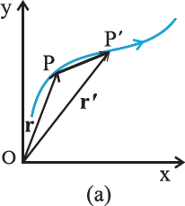
If object is at P′ at time t′, its position vector is OP′ = r′. Magnitude & direction of position vector: |r| = length OP; direction is from O to P. -
Path-independence of displacement: depends only on start & end points, not the route. So same start P and end Q ⇒ same displacement PQ even if path is PABCQ, PDQ, or PBEFQ. 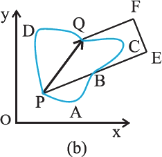
-
Key inequality: |displacement| ≤ distance travelled (path length) between the same two points.
3.2.2 Equality of Vectors
-
Graphical check: slide B parallel to itself until its tail matches tail of A. If heads also match ⇒ A = B. 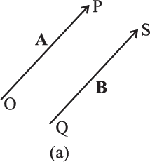
-
Common exam trap: same magnitude alone ≠ equal vectors. Same length but different directions ⇒ not equal. -
Free vectors vs localised vectors: Here we use free vectors: position doesn’t matter; parallel shifting doesn’t change the vector. In some cases, line/point of application matters → localised vectors.
3.3 Multiplication of Vectors by Real Numbers
-
If λ > 0: magnitude becomes λ|A| and direction stays same as A. Example: 2A has same direction as A and magnitude 2|A|. 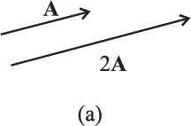
-
If λ < 0: (i.e. multiply by −λ where λ > 0) magnitude is λ|A| but direction is opposite to A. Examples noted: −1A and −1.5A are opposite to A, with magnitudes 1|A| and 1.5|A|. -
Dimensional (unit) effect: λ may have units. Then dim(λA) = dim(λ) × dim(A). Example: (constant) velocity vector × time interval = displacement vector.
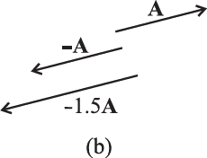
3.4 Addition and Subtraction of Vectors — Graphical Method
-
Graphical picture: vectors = directed line segments; length ∝ magnitude; drawn in a plane. -
Triangle method for A + B: Place B so its tail touches the head of A (head-to-tail). Draw a vector from tail of A to head of B; call it R. Then R = A + B.
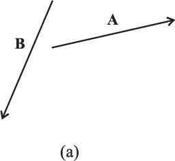
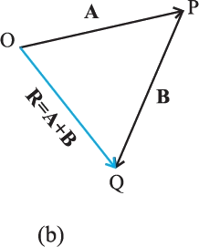
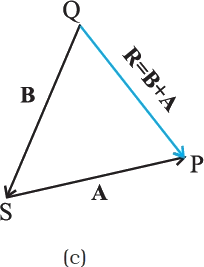
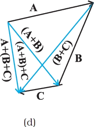
Vector Addition: Triangle (Head-to-Tail) Method
Commutative Law of Vector Addition
Associative Law of Vector Addition
Equal and Opposite Vectors: Null (Zero) Vector
Properties of the Null (Zero) Vector
Physical Meaning of a Zero Vector (Displacement Example)
Subtraction of Vectors
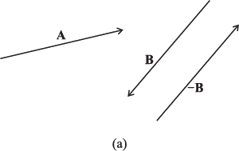
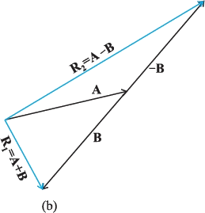
Parallelogram Method of Vector Addition
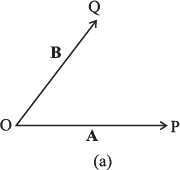
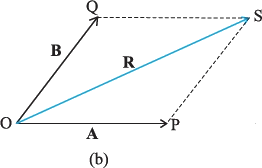
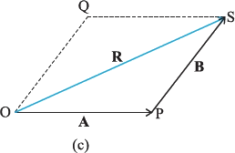
Worked Example: Rain and Wind (Resultant Velocity)
Example 3.1: Direction to Hold the Umbrella
- rain velocity (vertical downward), and
- wind velocity (horizontal, east → west).
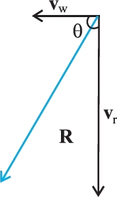
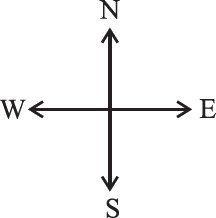
R = √(352 + 122) m s−1 = √(1225 + 144) = √1369 = 37 m s−1 tan θ = 12/35 = 0.343 ⇒ θ = tan−1(0.343) ≈ 19°
Resolution of Vectors
Resolving a Vector Along Two Non-Colinear Vectors
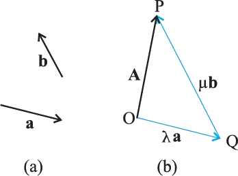
Unit Vectors and Rectangular Components
Unit Vectors (Definition and Properties)
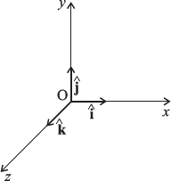
Writing a Vector Using a Unit Vector Along Its Direction
Rectangular Components in the x–y Plane
Relating Components to Magnitude and Direction
Two Equivalent Ways to Specify a Vector in a Plane
Magnitude + direction: (A, θ) where θ is w.r.t. x-axis, or Rectangular components: (Ax, Ay)
Finding Magnitude and Direction from Components
Vector Addition – Analytical Method
Vectors in an x–y plane (2D): component form and resultant components
Vectors in three dimensions (3D): component form and resultant components
Addition/subtraction of multiple vectors using components
Resolving a Vector in Three Dimensions (Direction Angles)
Position vector in three dimensions
Resultant of Two Vectors in Terms of Magnitudes and Included Angle (Example 3.2)
Magnitude of resultant: Law of Cosines
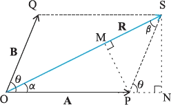
- Along A: B cosθ
- Perpendicular to A: B sinθ
Direction of resultant: Law of Sines and tangent form
- Perpendicular part of R (w.r.t. A): R sinα
- Perpendicular part of B (w.r.t. A): B sinθ
Worked Application: Relative Velocity of Boat and Current (Example 3.3)
Given and vector geometry
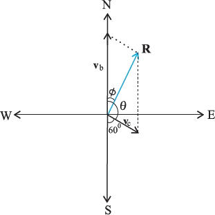
- Motorboat: vb = 25 km/h due north.
- Current: vc = 10 km/h at 60° east of south.
Magnitude using Law of Cosines
Direction using Law of Sines
Motion in a Plane
Position vector and displacement (Section 3.7.1)
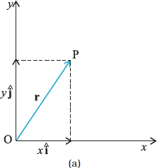
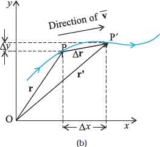
Average velocity and instantaneous velocity
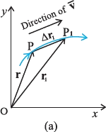
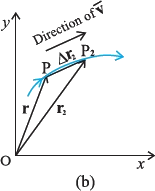
Instantaneous Velocity in a Plane: Direction and Components
Acceleration in a Plane: Average and Instantaneous
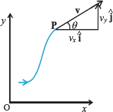
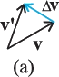
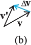
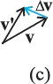
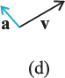
Example 3.4: Differentiating Position Vector to Get Velocity and Acceleration
- v(t) = dr/dt
- a(t) = dv/dt = d²r/dt²
Motion in a Plane with Constant Acceleration
Velocity–Time Relation (Vector and Components)
Position–Time Relation (Using Average Velocity)
- Differentiate Eq.: dr/dt = v
- Initial condition works: at t = 0, r = r0.
Example 3.5: Using r = r0 + v0 t + (1/2) a t² in 2D
Projectile Motion: Concept and Basic Equations
- Horizontal motion with no acceleration
- Vertical motion with constant acceleration due to gravity
Acceleration Components in Projectile Motion
Initial Velocity Components
Projectile Motion in a Plane
x-direction (horizontal): uniform motion (a = 0). y-direction (vertical): uniformly accelerated with −g (free fall).
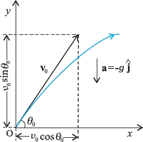
Position coordinates as functions of time
x, y = coordinates at time t v0 = initial speed θ0 = launch angle above horizontal v0x=v0cosθ0 = initial horizontal component v0y=v0sinθ0 = initial vertical component g = magnitude of gravity (acts downward)
vx stays constant for the whole flight. Only vy changes, exactly like vertical free fall.
Velocity components as functions of time
vx, vy = components of velocity at time t
vy = 0 Velocity is purely horizontal, and direction comes from component ratio:
Equation of the path (trajectory)
θ0, v0, g = constants for a given launch
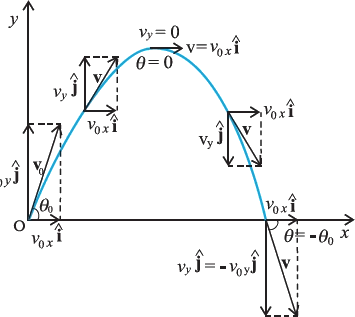
Time to reach maximum height
Use the top condition vy=0 in vy=v0sinθ0−gt.
Time of flight (returning to initial level)
Put y=0 in y=(v0sinθ0)t − (1/2)gt², take the non-zero root.
Maximum height of a projectile
Substitute t=tm into y(t) .
Horizontal range
R = horizontal range Tf = time of flight
Since max(sin) = 1: sin2θ0=1 ⇒ 2θ0=90° ⇒ θ0=45°.
Rm = max possible range for given v0
Example 3.6 (Galileo’s statement about equal ranges)
v0 fixed, g fixed ⇒ R depends only on sin2θ0
If θ0 = 45° + α ⇒ 2θ0 = 90° + 2α If θ0 = 45° − α ⇒ 2θ0 = 90° − 2α
sin(90° + 2α) = sin(90° − 2α) = cos2α
Example 3.7 (Horizontal projection from a cliff)
(i) time to reach ground (ii) impact speed
Origin at cliff edge; t=0 at throw. +x along throw; +y vertically upward. Handle x and y independently.
x0=0, y0=0 v0y=0 (horizontal throw) ay=−g=−9.8 m s−2 v0x=15 m s−1
vx=v0x= 15 m s−1 vy=v0y−gt = 0 − 9.8×10 = −98 m s−1
Example 3.8 (Oblique projection: height, time of flight, range)
(a) maximum height (b) time to return to same level (c) horizontal distance to return point (range)
Uniform Circular Motion
Direction of acceleration (centripetal nature)
r, r′ = position vectors at P, P′ v, v′ = velocity vectors at P, P′
v ⟂ r and v′ ⟂ r′ (for circular motion)
Magnitude of centripetal acceleration (derivation idea)
Δv = magnitude of change in velocity v = speed (constant) Δr = magnitude of change in position vector R = radius of the circle
Δv/Δt = (v/R)(Δr/Δt)
Works when Δt is small (so Δθ is small) ⇒ arc ≈ chord
Δr/Δt → v a = lim(Δv/Δt) = (v/R)·v = v²/R
ac = centripetal (radial) acceleration v = speed R = radius of circular path
Uniform Circular Motion: Centripetal Acceleration and Angular Speed
Centripetal acceleration (magnitude and direction)
|ac| stays constant if v and R are constant, BUT the direction of ac keeps changing (always inward).So centripetal acceleration is NOT a constant vector (even if its magnitude is constant). - ac points along the radius to the centre; velocity at any point is tangential.
Angular displacement, angular speed, and relation to linear speed
Centripetal acceleration in terms of angular speed
Time period, frequency, and their relations with ω, v, and ac
Time period (T): time for 1 full revolution. Frequency (ν): revolutions per second; ν = 1/T. In 1 revolution, distance along the circle: s = 2πR.
Worked Example: insect in a circular groove (Example 3.9)
Time period (1 rev): T = 100/7 s. Angular speed: ω = 2π/T = 2π × (7/100) = 0.44 rad s−1. Linear speed: v = ωR = (0.44 s−1)(12 cm) = 5.3 cm s−1.
Velocity is tangential everywhere; acceleration points to the centre. Because the inward direction keeps changing as it moves, acceleration is not a constant vector. Magnitude is constant (since ω and R are constant): a = ω2R = (0.44 s−1)2(12 cm) = 2.3 cm s−2.
Chapter Summary (Exam-usable facts from this portion)
Scalars and vectors
Scalar: magnitude only (e.g. distance, speed, mass, temperature). Vector: magnitude + direction; follows vector algebra (e.g. displacement, velocity, acceleration).
Multiplication of a vector by a real number
Vector addition laws and methods
- Graphical methods: head-to-tail and parallelogram.
- Commutative: A + B = B + A.
- Associative: (A + B) + C = A + (B + C).
Zero (null) vector and its properties
Vector subtraction
Resolution of a vector along two given vectors in a plane
Unit vector and standard unit vectors i, j, k
Component form of a vector in x–y plane
Analytical method of vector addition (component-wise)
Position vector and displacement in x–y plane
Average velocity and instantaneous velocity
Average acceleration and instantaneous acceleration
Motion in a plane with constant acceleration (vector and component equations)
Projectile motion (definition, equations, trajectory, maximum height, time to rise, range)
Projectile: object in flight after projection. Standard setup: start at origin; initial speed v0 at angle θ0 to x-axis; acceleration = gravity downward (magnitude g).
Uniform circular motion (collected results)
Points to Ponder (Exam Essentials from Motion in a Plane)
1) Path length vs displacement (magnitude)
2) Average speed vs magnitude of average velocity
3) Axis-independence of vector equations
4) Uniform acceleration equations vs uniform circular motion
5) Resultant velocity vs relative velocity (do not confuse)
6) Acceleration in circular motion: when is it purely centripetal?
7) Trajectory depends on acceleration and initial conditions
- the acceleration, and
- the initial conditions: initial position + initial velocity.
- straight line (e.g., purely vertical throw), or
- parabola (projectile with a horizontal component).
Vector Inequalities (Triangle Inequality and Related Results)
Triangle inequality for vectors
- |a + b| < |a| + |b| (generally)
- Equality when a and b are parallel + same direction (collinear, angle 0°).
Reverse triangle inequality
- |a + b| > ||a| − |b|| (generally)
- Equality when a and b are antiparallel (collinear, opposite directions, angle 180°).
Inequalities for difference of vectors
- For |a − b| = |a| + |b|: a and b must be antiparallel (since a − b = a + (−b), and a ∥ (−b) ⇒ a opposite to b).
- For |a − b| = ||a| − |b||: a and b must be parallel in the same direction.
Consequences of a + b + c + d = 0 (Vector Closure)
Interpreting a + b + c + d = 0
Must each vector be zero?
Relation between (a + c) and (b + d)
Magnitude of a compared to magnitudes of b, c, d
Planarity of b + c relative to a and d
- If a and d are not collinear → they define a plane; (a + d) lies in it ⇒ b + c lies in the plane of a and d.
- If a and d are collinear → (a + d) lies on that line ⇒ b + c lies on the same line.
Circular Motion: Speed, Direction, and Acceleration (Exam Reminders)
Direction of velocity in circular/curved motion
Radial (centripetal) and tangential acceleration
- Radial (centripetal): towards centre (changes direction of v).
- Tangential: along tangent (changes speed).
Average acceleration over one full cycle in uniform circular motion
Scalars and Vectors (Concept Checks Embedded in Exercises)
Scalar vs vector: what examiners test
Meaningful algebraic operations with scalars/vectors
- Scalar + scalar → meaningful.
- Scalar + vector (even “same units”) → not meaningful (different mathematical types).
- Scalar × vector → meaningful (scales magnitude; negative scalar flips direction).
- Scalar × scalar → meaningful.
- Vector + vector → meaningful (gives a vector), but only if they’re compatible physical quantities.
- “Add a component to the vector” (e.g., A + Ax) → not meaningful as written (component is a scalar). If you mean the component vector, then OK: A + Ax î.
True/false style conceptual facts
- Magnitude of a vector is a scalar → true.
- Each component of a vector is a scalar → true (signed number in a chosen coordinate system).
- Total path length always equals |displacement| → false (only if direction never changes).
- Average speed ≥ |average velocity| → true (equality only when path length = |displacement|).
- Three vectors not lying in a plane can never add to zero → tricky: if a + b + c = 0, then they must be coplanar (can form a closed triangle). So truly non-coplanar vectors cannot sum to zero. Many errors come from misreading “not lying in a plane”.
Average Quantities and Validity of Common Relations (Arbitrary Motion in Space)
Correct expression for average velocity
Correct expression for average acceleration
Relations that are NOT generally valid for arbitrary motion
- v̄ = (1/2)[v(t1) + v(t2)] → not always true; only special cases (e.g., constant acceleration in 1D, or constant acceleration with fixed direction in an appropriate sense).
- v(t) = v(0) + a t → not generally true unless acceleration a is constant as a vector.
- r(t) = r(0) + v(0)t + (1/2)a t2 → not generally true unless acceleration is constant as a vector.
Scalar Quantity: What It Does and Does Not Mean
Misconceptions about scalars (true/false type)
- (a) is conserved in a process → false (conservation is separate; speed is scalar but not conserved).
- (b) can never take negative values → false (electric potential, Celsius temperature can be negative).
- (c) must be dimensionless → false (mass, time, energy are scalars with dimensions).
- (d) does not vary from one point to another in space → false (scalar fields like temperature can vary with position).
- (e) has the same value for observers with different orientations of axes → true (scalar value doesn’t depend on axis orientation; vector components do, though the vector itself is invariant).